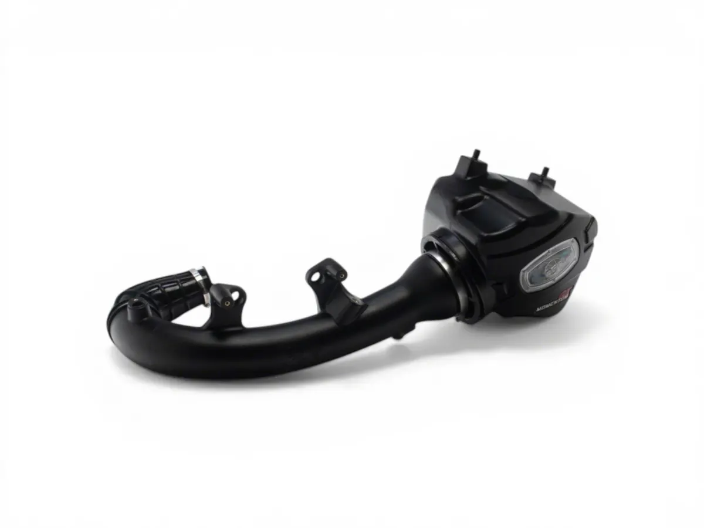
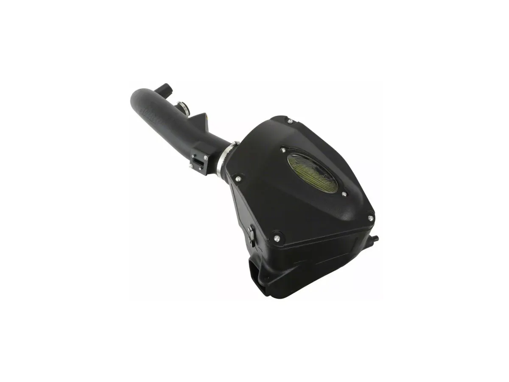

The Install Time on the Listing Is Not the Install Time
The verdict first: the "Less than 1 Hour" badge on a parts listing is a best case, not a typical case. Across 24 listings and 490 owner reviews, the parts listed as under an hour had a median reported install of about 38 minutes, so the badge points the right way. But 4 of the 22 owners who named a
The verdict first: the “Less than 1 Hour” badge on a parts listing is a best case, not a typical case. Across 24 listings and 490 owner reviews, the parts listed as under an hour had a median reported install of about 38 minutes, so the badge points the right way. But 4 of the 22 owners who named a whole-job time took two hours or more, and two took four and a half. Plan for the median and keep the afternoon free anyway.
What this is
Not a review of one part — a count of something every listing shows and almost nobody checks: the install-time badge, and what buyers say after.
We pulled every review from the listings behind our buying guides: 24 unique listings spanning cold air intakes, leveling kits, brake pads, wheels, tyres, exhaust and an inline controller — 490 visible reviews, of which 51 state a time. We counted the 38 that gave one clear whole-job figure and left out the rest: two-part times, hypotheticals, a shop mount-and-balance, a builder’s “weekend, 6 hours a day”.
The listings sort into buckets: 16 say Less than 1 Hour, 6 say Afternoon, 1 says Shop Install, 1 states no time.
| Listing said | Owners who named a time | Median reported | Range |
|---|---|---|---|
| Less than 1 Hour | 22 | 38 min | 10 min – 4.5 hrs |
| Afternoon | 16 | 2 hrs 22 min | 40 min – 4 hrs |
Two numbers matter more than the medians. On the “Less than 1 Hour” listings, 4 of 22 owners reported two hours or more. On the “Afternoon” listings, 5 of 16 finished in 90 minutes or less.
The badge is not lying. It is the time for someone who has done it before, with the right tools, on a clean truck.
What owners actually said
The intake that took longest is a 2026 Silverado 1500 Duramax, listed at under an hour. TedT, 17 April 2026: “Installation was more challenging than expected. The fit is extremely tight, and you will need to remove multiple components to make space. I had to take out the coolant reservoir and other surrounding parts just to get the factory airbox out and the new unit in.” His conclusion: “The full installation took about 4–5 hours.”
The leveling kits run the other way. jdj1911, 10 July 2020, on a kit listed as Afternoon: “I had to choose afternoon for instal time but only took 2 to 2.5 hours to instal” — and another owner on a different kit finished in 40 minutes flat.
The pattern in one line: the badge describes the good case on the easy vehicle, and the variation runs both directions.
The parts behind those numbers
Three intakes account for most of the spread on the under-an-hour side.

S&B Cold Air Intake with Dry Extendable Filter (19–26 2.7L Silverado 1500)
Three owners named a whole-job time: 1 hour, 1 hour, and 4.5. Los505: "Can't lie though, watched video and still took me a good 4 1/2 hrs." The gap is the truck, not the part, and he still gave it five stars.
- Price
- $399.00
- Fitment
- 2019–2026, 2.7L TurboMax
- Filter
- Dry, extendable — no oiling
- Owner reviews
- 2,798
See the S&B dry intake → list price $399.00, checked 4 Nov 2026

aFe Momentum GT Cold Air Intake, Pro DRY S Filter (19–26 2.7L Silverado 1500)
Four owners timed it at 30, 45, 60 and 120 minutes, so three of the four beat the badge. The 2-hour report said why: "It took me 2hrs but I wanted to make sure I didn't screw it up lol."
- Price
- $435.00
- Fitment
- 2019–2026, 2.7L TurboMax
- Filter
- Pro DRY S — dry, no oiling
- Owner reviews
- 436
See the aFe Momentum GT → list price $435.00, checked 4 Nov 2026

AIRAID Performance, SynthaMax Dry Filter (19–26 2.7L Silverado 1500)
Cheapest, and furthest past its badge: one owner reported "2.5 hours to install on a Saturday". The other said "less than an hour," so the real range is 1 to 2.5 hours.
- Price
- $368.00
- Fitment
- 2019–2026, 2.7L TurboMax
- Filter
- SynthaMax — dry, no oiling
- Owner reviews
- 36
See the AIRAID intake → list price $368.00, checked 4 Nov 2026
Install notes: what separates an hour from four
None of the long installs are about the part being badly made — every one above is five stars.
Removing the factory part is the hard half. Dbennett1188: “Getting the old intake out was a pain but this just slipped right in. About 45 minutes of work all together.” On the Duramax, the factory hose was stuck to the turbo inlet.
Engine bay size decides more than the part does. Every counted report of two hours or more came off a 2.7L or a 3.0L Duramax; no 5.3L owner in the set reported one that long.
Struts are the wildcard on a leveling kit. One owner had to reverse the lower shock mount in a vice; the 40-minute report came off a clean truck.
The useful number is not the badge, but whether the buyer had done it before. Every fast report mentioned watching a video or having air tools.
California legality
This matters for the intake buyers above and it is not in the reviews.
We could not confirm CARB legality for any intake in this set, because no listing we read stated an Executive Order number. A replacement air intake on a 2019-or-newer vehicle needs an EO number and a plate under the hood. Without one it fails a smog visual inspection — you can pass the sniffer and still fail, because the inspector is looking for the plate.
Before you buy, search the manufacturer’s CARB list by part number. If it is not there, treat it as not legal in California regardless of what the store page says.
The best alternative
A drop-in panel filter sidesteps the hour-plus job: it replaces the element inside the factory airbox and takes minutes.

K&N Drop-In Replacement Air Filter (19–26 Silverado 1500)
Oiled cotton-gauze, reusable, drops into the stock airbox. The only owner who named a time said "no more than 30 min" — the most reliable badge here, since there is no intake tube to remove.
Because it is oiled, the MAF caution still applies: oil it lightly, let it dry fully, and clean the sensor at every service.
- Price
- $69.00
- Fitment
- 2019–2026 Silverado 1500
- Filter
- Oiled cotton-gauze, reusable
- Keeps factory airbox
- Yes
See the K&N drop-in → list price $69.00, checked 4 Nov 2026
It will not give you the induction noise a full intake does, but it carries no fitment risk and fits in a lunch break.
Bottom line
Read the badge as the floor, not the estimate. Under an hour, budget two. Afternoon means the afternoon — 5 of 16 owners beat 90 minutes; the rest ran to four hours.
Buy the part for what it does, on a day when the time does not matter.
CarModReview may earn a commission from purchases made through links on this page, at no extra cost to you.
Topics
- Engine & Intake
- K&N
- aFe
- AIRAID
- S&B
- Silverado 1500
- Duramax
- TurboMax